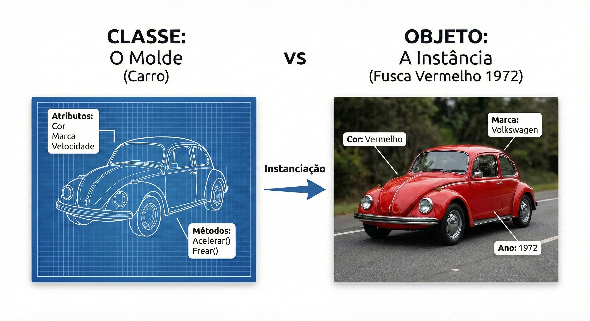

Um paradigma de programação que organiza o software em objetos — unidades que combinam dados e comportamentos, tornando o código mais modular, reutilizável e fácil de manter.
Selecione um tópico para aprender mais sobre cada pilar.
Protege os dados internos de um objeto, expondo apenas o necessário.
Permite que uma classe herde atributos e métodos de outra classe.
Objetos diferentes respondem a mesma mensagem de formas distintas.
Oculta complexidade e expõe somente o que é essencial ao usuário.
Em POO, um objeto é uma instância de uma classe. A classe funciona como um molde — ela define quais atributos (dados) e métodos (comportamentos) os objetos criados a partir dela terão.
Por exemplo: a classe Carro define que todo carro tem cor, marca e velocidade. Um objeto seria um carro especifico: um Fusca vermelho de 1972.

class Carro {
String cor;
String marca;
int velocidade;
void acelerar() {
velocidade += 10;
}
}